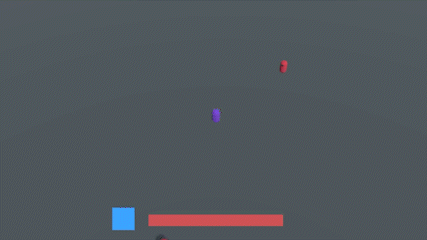

Quick Start Guide¶
Welcome to the Quick Start Guide for the Unity Prototyping Toolkit. In this guide, you'll find step-by-step instructions to help you get started with the toolkit's functionality. All the examples and resources mentioned here can be found in the Quick Start Guide Sample Folder.
Our goal with the Quick Start Guide is to strike a balance between following best practices and avoiding unnecessary complexity during the early stages of development. We aim to empower you to efficiently create prototypes while maintaining a solid foundation for future enhancements.
Let's dive into the guide and explore the features and workflows that the Unity Prototyping Toolkit offers.
What We're Implementing in This Guide (Estimated Time: ~2 hours)¶
These implementations are essential to create a simple game loop.
In this section, we'll outline the key components we'll be working on during the course of this guide.
- Simple Player and Camera Setup (Approx. 20 minutes)
- Create a basic player character with planar movement controls.
- Set up an isometric camera view to provide a suitable perspective.
- Player Health Control and UI Feedback (Approx. 40 minutes)
- Implement a player health controller that triggers damage events.
- Integrate UI feedback to reflect changes in player health.
- Enemy Spawning and Movement (Approx. 50 minutes)
- Develop an enemy spawning system that generates enemies around the player.
- Configure enemies to move towards the player and pass them.
Bonus Implementations (Estimated Time: ~1.5 hours)¶
These additional implementations are beneficial for enhanced
testing and iteration of your prototype.
- Player Skill for Dealing Damage (Approx. 30 minutes)
- Introduce a skill that allows the player to deal damage to enemies in proximity.
- Provide UI feedback to indicate the skill's activation and effect.
- Game Controller with States and UI (Approx. 40 minutes)
- Create a game controller to manage different game states (start, game, end).
- Design UI elements to convey game state transitions effectively.
- Audio Options and Sound Effects (Approx. 20 minutes)
- Incorporate audio options to control sound settings.
- Implement relevant sound effects to enhance the game experience.
Feel free to refer to the accompanying video showcasing the finished game. Let's start building your prototype step by step!

Lets get started¶
1. Initial Setup¶
In this section, we'll set up the foundational elements needed for this prototype. We'll create a ScriptableObject named GameData to manage shared variables, events, and references between different features of the prototype. This can be done since this will be a single player game. The approach for a multiplayer game could be different.
1.1 Creating the GameData ScriptableObject
To centralize essential data and references, follow these steps:
- Create a new C# script named
GameDataand attach it to a newScriptableObject.using UnityEngine; [CreateAssetMenu(fileName = "GameData", menuName = "GameData")] public class GameData : ScriptableObject { } - You can remove the
CreateAssetMenuattribute once theGameDataasset is created since only one instance is needed.
1.2 Using GameData References
In your project's scripts, you'll frequently reference the GameData to access shared data.
1.3 Creating a New Scene
Start your prototype with a clean slate. Create a new scene and name it according to your preference.
With the initial setup in place, we're ready to begin building the individual components of this prototype. Let's move on to the next steps!
2. Player, Movement and Camera Setup¶
In this section, we'll work on setting up the player's character movement and camera functionality. You can either use the provided sample player or integrate your own character controller, depending on your preference.
2.1 Integrating the Isometric Camera
Follow these steps to integrate the isometric camera into your player character:
- Drag and drop the isometric camera prefab from
PrototypingToolkit/Cameras/IsometricCamerainto your player's hierarchy. - Adjust the camera's target to ensure it's positioned correctly in relation to your character.
- Customize Cinemachine settings as needed to achieve your desired camera behavior.
2.2 Setting Up Input Controls
To enable player movement, you'll need to create an InputActionMap with WASD bindings for movement controls.
2.3 Creating Player Settings
For player settings, consider creating Variables such as currentSpeed and maxSpeed for more flexible adjustments:
- Right-click in your project, navigate to
Create/PrototypingToolkit/Variables/FloatVariable, and name it appropriately. - Reference the created variable in your
GameDatascript. You can access its value usingGet()and set it usingSet(value).
2.4 Moving Ground Integration
Ensure that your player has a collider component for future steps and that its tag is set to "Player". Implement a ground that moves along with the player's character. You can also remove the collider from the ground since we are not going to work with physics for now.
At this point, your project, scene, and player should resemble the setup shown below:

With the player, movement controls, and camera setup in place, we're making great progress. Let's move on to the next steps!
3. Player Health Controller with Damage Event¶
In this section, we'll implement a player health system that responds to damage events and provides UI feedback for the player's health status.
3.1 Setting Up Player Health Variables
To create a health system, start by setting up a FloatVariable named PlayerHealth_FloatVariable with a start value of 100. This variable will track the player's health throughout the game.
3.2 Creating Health Bar UI
- Add a hud canvas to your scene and include two simple images:
- One as the background in a dark color.
- Another for the player's health bar, set to red with the Image Type set to "Filled."
3.3 Implementing HealthBarUIController
The HealthBarUIController script is crucial for updating the health bar UI in response to player health changes. To set this up:
- Create an EmptyEvent by right-clicking in the project and selecting
Create/PrototypingToolkit/Events/EmptyEvent.Name itPlayerHealthChanged_EmptyEventand attach it to thePlayerHealth_FloatVariable. - Implement the
HealthBarUIControllerscript as follows:public class HealthBarUIController : MonoBehaviour { [Header("Game Data")] [SerializeField] private GameData gameData; [Header("Internal Refs")] [SerializeField] private Image bar; [Header("Debug")] [SerializeField] private float targetFillAmount; private void OnEnable() { gameData.PlayerHealth.OnCurrentChanged .Register(OnPlayerHealthChanged); OnPlayerHealthChanged(); } private void OnDisable() { gameData.PlayerHealth.OnCurrentChanged .Unregister(OnPlayerHealthChanged); } private void OnPlayerHealthChanged() { targetFillAmount = gameData.PlayerCurrentHealth.Get() / gameData.PlayerCurrentHealth.StartValue; bar.fillAmount = targetFillAmount; } }
3.4 Introducing Player Damage Interaction
Simulating player damage involves adding an OnTriggerEnter method to the player's collider. This method raises the DealDamageToPlayer_EmptyEvent when a triggering object enters:
public class Damageable : MonoBehaviour
{
[Header("Data")]
[SerializeField] private GameData gameData;
private void OnTriggerEnter(Collider other)
{
if (other.CompareTag("Player")) return;
gameData.DealDamageToPlayer.Raise();
}
}
3.5 Implementing the Health Controller
The HealthController script manages player health manipulation. It performs the following:
- Subtracts the specified damage amount from the player's health.
public class HealthController : MonoBehaviour
{
[Header("Data")]
[SerializeField] private GameData gameData;
private void OnEnable()
{
gameData.DealDamageToPlayer.Register(OnDamageToPlayer);
}
private void OnDisable()
{
gameData.DealDamageToPlayer.Unregister(OnDamageToPlayer);
}
private void OnDamageToPlayer()
{
gameData.PlayerCurrentHealth.AddToCurrent( -10 );
}
}
3.6 Testing the Health System
For testing purposes, a button method has been added to GameData to simulate player damage during runtime:
[ButtonMethod]
private void DamagePlayerTest()
{
DealDamageToPlayer.Raise();
}
With the player health controller and damage events set up, your game prototype is becoming more interactive and engaging. In the next section, we'll delve into enemy spawning and interactions to further enhance the game loop.
4. Enemies and EnemySpawner¶
To introduce enemies into your game loop, follow these steps:
4.1 Creating the Enemy Prefab
- Create a new model with a collider, similar to the player's setup.
- Design the enemy with distinct materials and colors to differentiate it from the player.
- Establish essential Variables for the enemy, such as
movementSpeedanddamage. The damage value can now be integrated into the player'sHealthController.
4.2 Enemy Movement Towards the Player
- Implement the enemy's movement logic to make them walk towards and pass the player. Utilize the
Updatemethod for this behavior. - To avoid direct player references in the enemy scripts, add the Player Transform to the
GameDataduring the player'sAwakemethod. This way, the enemies can access the player's position inOnEnablevia theGameDatawithout direct coupling.
4.3 Creating the EnemySpawner
- Construct an EnemySpawner GameObject nested within the player to facilitate enemy spawning.
- Define necessary Variables within the EnemySpawner for
spawnRadius,deSpawnRadius, andspawnRate.- Ensure that the
deSpawnRadiusvalue exceeds thespawnRadiusto enable proper despawning behavior.
- Ensure that the
- Develop a coroutine within the EnemySpawner that generates enemies at random positions within the specified
spawnRadius. Control the spawning rate using thespawnRatevariable. - Attach a collider component to the EnemySpawner GameObject and implement
OnTriggerExit. This function will handle enemy despawning when they move beyond thedeSpawnRadius. - Note: The EnemySpawner, being part of the player, should also be tagged with "Player" to ensure consistent behavior.
With these steps completed, you've successfully established the basic game loop. The game is now playable, and enemies are actively engaging with the player. The subsequent sections will delve into adding more features and enhancements to your prototype.
Lets add more¶
5. A skill to deal damage to enemies with UI feedback¶
For this we create a new prefab that sits inside the player - it need a Rigidbody (because it handles its own collisions with the enemies) and the "Player" tag so that it does not collide with the player - it needs a collider in a child and some sort of visual in our case its a sprite on the ground - the collider will destroy enemies in OnTriggerEnter - we also need a new inputAction to use the skill, so it needs to be added to the InputActionMap - and we add some Variables to the GameData for settings like coolDown and curCoolDown It could look like this:
public class DamageSkillController : MonoBehaviour
{
[Header("Data")]
[SerializeField] private GameData gameData;
[Header("Internal Ref")]
[SerializeField] private GameObject damageCollider;
[Header("Debug")]
[SerializeField] private bool isPressed;
private void OnEnable()
{
gameData.SkillInput.action.Enable();
gameData.SkillInput.action.started += OnSkillInput;
gameData.SkillInput.action.canceled += OnSkillInput;
damageCollider.SetActive(false);
}
private void OnDisable()
{
gameData.SkillInput.action.started -= OnSkillInput;
gameData.SkillInput.action.canceled -= OnSkillInput;
gameData.SkillInput.action.Disable();
}
private void OnSkillInput(InputAction.CallbackContext context)
{
isPressed = context.started;
}
private void Update()
{
if (gameData.CurCoolDown.Get() > 0)
{
gameData.CurCoolDown.AddToCurrent(- Time.deltaTime);
}
else if (isPressed)
{
DoSkill();
}
}
private void DoSkill()
{
if (!(gameData.CurCoolDown.Get() <= 0)) return;
StartCoroutine(DealDamage());
}
private IEnumerator DealDamage()
{
damageCollider.SetActive(true);
RefreshCoolDown();
yield return new WaitForSeconds(gameData.SkillActiveTime.Get());
damageCollider.SetActive(false);
}
private void RefreshCoolDown()
{
gameData.CurCoolDown.Set(gameData.SkillCoolDown.Get());
}
}
Next we need another filled image in our hud that will indicate weather our skill is on coolDown or not - for that we check in the Update method if the curCoolDown is lower or the same as the coolDown and set the fillAmount respectively
6. GameController with UI¶
For this we need a GameController inheriting form StateMachine - it need the StartState GameState and EndState - will instantiate them initialize with the StartState and will then react to events in order to trigger state transitions - it will hold all the necessary scene references in order to give them to the states - these states will than handle logic in their Enter and Exit methods in order to represent the state properly
We also need two new canvases - a start canvas which will have some Information about the rules and a start button - a end canvas with a restart button - the buttons will trigger events which will be handled by the GameController
We also need a container for the enemies that can be cleared on state transitions The GameController could look like this:
[DefaultExecutionOrder(-10)]
public class GameController : StateMachine
{
[Header("Data")]
[SerializeField] private GameData gameData;
[Header("Scene Refs")]
[SerializeField] private GameObject player;
[SerializeField] private EnemyContainerController enemyContainerController;
[SerializeField] private GameObject hud;
[SerializeField] private GameObject startScreen;
[SerializeField] private GameObject endScreen;
private StartState startState;
private GameState gameState;
private EndState endState;
private void Awake()
{
player.SetActive(false);
enemyContainerController.gameObject.SetActive(false);
hud.SetActive(false);
endScreen.SetActive(false);
gameData.ReStart.Register(EnterStartState);
gameData.GameStart.Register(EnterGameState);
gameData.GameOver.Register(EnterEndState);
startState = new StartState(gameData, startScreen);
gameState = new GameState(gameData, player,
enemyContainerController, hud, startScreen);
endState = new EndState(gameData, endScreen);
Initialize(startState);
}
[ButtonMethod]
private void EnterStartState()
{
if (currentStateSO.Get() is not StartState) TransitionTo(startState);
}
[ButtonMethod]
private void EnterGameState()
{
if (currentStateSO.Get() is not GameState) TransitionTo(gameState);
}
[ButtonMethod]
private void EnterEndState()
{
if (currentStateSO.Get() is not EndState) TransitionTo(endState);
}
}
7. Sounds and audio options¶
For that we to get some Sounds. We can take some free sounds from Kenny Lets add some sounds for the start button, the dealDamageToPlayer event, the skill and for game over. First lets add an AudioManager to your scene - PrototypingToolkit/Audio/Prefabs/AudioManager - also right-click in the hierarchy under PrototypingToolkit/AudioManager
Ceate Audio Event Data for each Sound - set the corresponding mixer group - add the audio files to the Audio Clips List - adjust Volume and pitch
There a two ways to raise audio events with audio event data - either in the inspector with unity events and the Play AudioEvent - or via code by referencing the audio event data, raising it and sending the sound with it
As an example we can create an empty GameObject add a EmptyEventListener and react to the "DealDamageToPlayer_EmptyEvent" and add the Play AudioEvent and our created Audio Event Data with the corresponding sound(s)
A more convenient way would be to raise them where they happen (for example in the HealthController)
private void OnDamageToPlayer()
{
gameData.PlayerHealth.AddToCurrent(-gameData.EnemyDamage.Get());
gameData.AudioData.PlayAudioEvent.Raise(gameData.BumpSound);
if (gameData.PlayerHealth.Get() <= 0)
{
gameData.GameOver.Raise();
gameData.AudioData.PlayAudioEvent.Raise(gameData.GameOverSound);
}
}
Another thing we need to do is add some Audio Options For that we need two things:
We need to add an Audio_slider to our start canvas - PrototypingToolkit/Options/Audio/Prefabs/Audio_Slider - reference the Sound_VolumeFloatVariable
And we have to add the AudioDataManager to our scene - PrototypingToolkit/Audio/Prefabs/AudioDataManager - also right-click in the hierarchy under PrototypingToolkit/AudioDataManager
And that is it now we have a prototype on which we can iterate on.
Now its your turn:¶
Add some extras to learn more about PTK,
and improve your playtesting environment:
- Add a timer and an indicator that shows how many enemies you have surpassed
- Add more visuals to give better feedback for player movement
- Add an Input rebind menu for the player controls
- Add another skill (a dash perhaps)
- Add a progression which changes the enemy spawn rate over time
- Try out different cameras and see how gameplay changes